Безапеляційно мажорне життя суддів київських апеляційних судів. Розслідування «PROSUD».
14 липня 2016р.

Частина 1. Сокуренко Дмитро Михайлович.
23 квітня 2014р. Указом в.о. Президента України Турчинова з апеляційного суду Донецької області до апеляційного суду міста Києва було переведено суддю Сокуренка Дмитра Михайловича.
За часів президентства Віктора Януковича (призначений з вересня 2010р. Наказом тодішнього Міністра юстиції Лавриновича), пан Сокуренко був членом Вищої кваліфікаційної комісії суддів України (ВККС), одними з головних завдань якої є ведення суддівського досьє,
формування суддівського корпусу, переведення суддів, проведення їх кваліфікаційного оцінювання та застосування дисциплінарної відповідальності/стягнень до суддів місцевих та апеляційних судів.
До чого ВККС "кваліфікаційно наоцінювалась" у ті часи, ми всі чудово побачили (а багато хто і без-посередньо відчув на собі) під час Революції Гідності, коли сотні суддів по абсолютно сфальшованих справах кидали побитих беркутами людей за грати, звинувачуючи їх же у побитті "правоохоронців", відбирали водійські права у активістів Автомайдану, використовуючи у якості доказів "правопорушень" написані як під копірку сотні рапортів навіть без підписів ДАІшників, які їх типу "складали", забороняли акції протесту в центрі Києва з метою узаконити практично неоголошену війну з мирним населенням, яку в ніч на 30-е листопада 2013р. розпочав беркут тощо.
Після Майдану Сокуренка мали б люструвати відповідно до Закону України «Про очищення влади», але натомість просто перевели з одного "хлібного" апеляційного суду до ще "хлібнішого".
Більше того, вдосталь насудившись вже за життя "по-новому", він написав заяву до Вищої ради юстиції про відставку та звільнення з посади у зв'язку з неможливістю виконувати свої повноваження... за станом здоров'я :)
Таким чином, пан Сокуренко уникне проходження кваліфікаційного оцінювання тією ж Вищою кваліфікаційною комісією суддів України, членом якої він і був за часів Януковича, а ось тут маленький нюанс: під час кваліфікаційного оцінювання члени ВККС у тому числі перевіряють і декларації суддів на відповідність їхнього майна доходам. Виходить, що суддя Сокуренко Дмитро Михайлович уникне даної перевірки, бо написав заяву про відставку за станом здоров'я?
Ми ж вирішили самі перевірити, як живе пан Сокуренко, бо, можливо, саме вартість майна так раптом "підкосила" його здоров'я після початку кваліфікаційного оцінювання суддів? ;)
У своїй декларації за 2014р. Дмитро Михайлович вказав 360тис.грн. доходу, з яких 272тис.грн. - заробітна плата. Дохід дружини - майже 120тис.грн., з яких заробітна плата - 120тис.грн. Виходить, що родина пана Сокуренка живе, практично, на одну заробітну плату :)
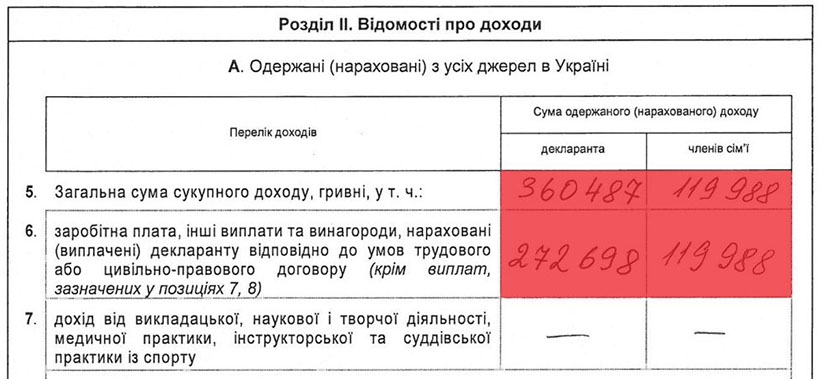
Натомість Дмитро Михайлович має у власності з 2013р. земельну ділянку площею 0,12Га у с.Крюківщина Києво-Святошинського району Київської обл., де ціна за 1 сотку навіть зараз, в умовах фінансової кризи в країні, стартує в середньому від 2-2,5тис.$ (або 25-30тис.$/12 соток).
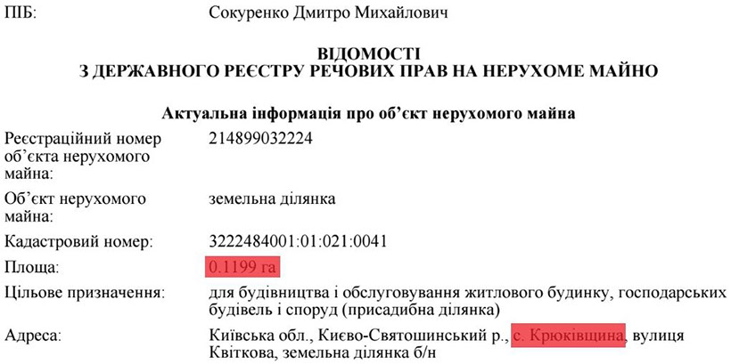
Є у Сокуренка у власності з 2010р. також і чималий будиночок на 534м² в одному з найдорожчих, Печерському районі Києва, саме що не нає на Печерських пагорбах. Розташований він буквально в 5 хвилинах ходьби(!) (400м.) від монументу "Батьківщини-Мати".

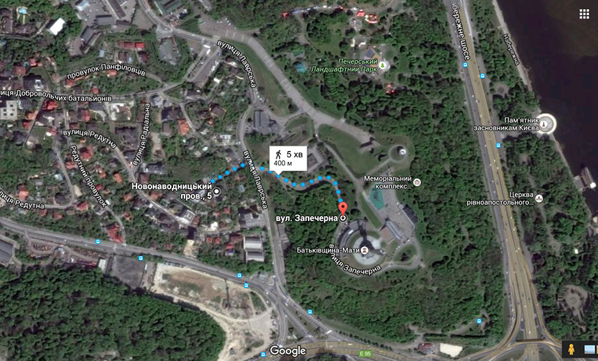
Тут ціна за сотку землі дійсно просто космос, а точніше від... 120тис.$(!) Тобто на сьогодні лише земельна ділянка (7 соток) судді Дмитра Сокуренка в даному місці коштує мінімум 840тис.$ або майже 21млн.грн.(!) Тобто із заробітною платою на рівні 2014р. пану Сокуренку знадобилося б більше 77 років працювати лише на цю земельну ділянку, не витрачаючи жодної копійки навіть на їжу :)
Ось декілька фото маєтку Сокуренка з повітря.
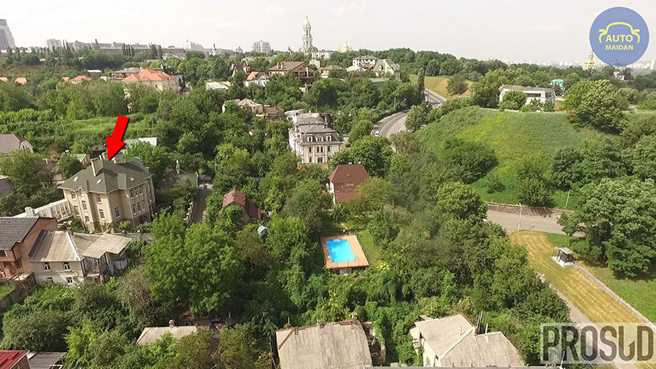
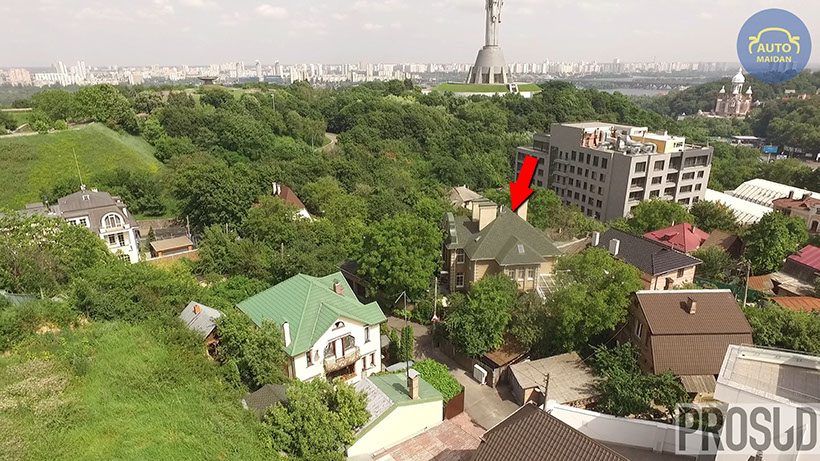
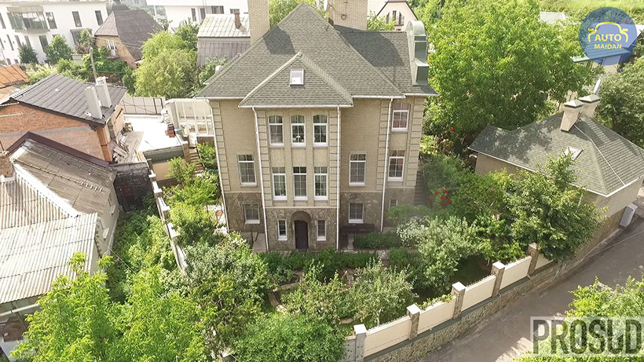
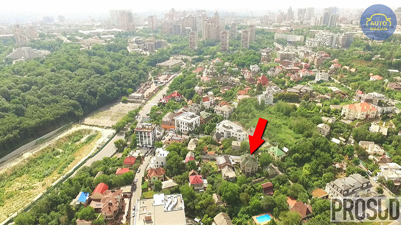
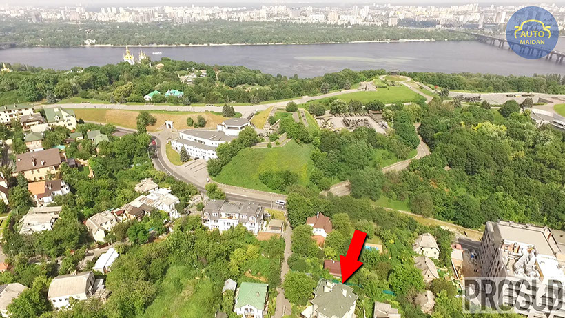
1 - 5
<
>
За словами ж експертів, разом з будинком актуальна ціна даного маєтку на сьогоднішній день становить мінімум 1,25млн.$(!) або 31млн.грн. (114 річних заробітних плат Дмитра Сокуренка станом на 2014р.) За документами ж даний маєток у 2010р. був оцінений лише у скромні 2,245млн.грн. або 280,7тис.$ за тодішнім курсом долара США. Тобто його "офіційна" ціна була явно занижена.
Має неподалік свого будинку (на відстані 500м.) з 2010р. Дмитро Михайлович і недешеву двокімнатну квартиру на вул. Лаврській (Івана Мазепи) вартістю від 110-120тис.$ (2,7-3млн.грн. або близько 10 його річних заробітних плат).

У 2010р. вона була оцінена в жалюгідні, як для такої квартири, 58,8тис.грн. або 7355$(!) за курсом 8. Це просто смішно, адже подібні квартири в даному елітному місці столиці коштують на порядок більше.
"Маленький" нюанс є з цією квартирою: дивно, але в офіційній декларації за 2014р. судді Сокуренка ми даної квартири не знайшли. "Забув" вказати? :)
До речі, дружина судді Сокуренка, Шокун Світлана Миколаївна, також ще з часів "правління" Януковича і по сьогоднішній день є дисциплінарним інспектором секретаріату... Вищої кваліфікаційної комісії суддів України (яка і визначає, хто з суддів пройде кваліфікаційне оцінювання, а хто - ні). Нагадаємо, що членом цієї ж ВККС Дмитро Михайлович і був з 2010р. Показово, що Януковичем Сокуренка було нагороджено в 2011р. орденом "За заслуги" II ступеня, а Світлані Миколаївні в жовтні 2013р. Віктором Федоровичем присвоєно почесне звання "Заслужений юрист України".
Нещодавно ж, за результатами перевірки тієї ж ВККС, було встановлено, що до Шокун Світлани Миколаївни не застосовуються заборони, визначені Законом України “Про очищення влади”.
У власності ж дружини Сокуренка з 2009р. є задекларований нею житловий будинок на 183м² у Київській області.
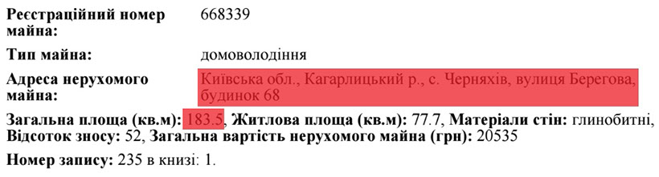
Автопарк у Дмитра Михайловича скромніший, ніж нерухомість.
"Лише" Toyota Prado 2.7 2004р.
та... 5-літровий(!) Chevrolet Starcraft 5.3 2004р.
Дружина користується автомобілем HONDA CR-V 2.0 2008р.
А от із коштами на банківських рахунках станом на 2014р. в родині Сокуренка взагалі біда - лише на 8279грн. вкладів має Дмитро Михайлович, а його дружина ж взагалі - нуль.
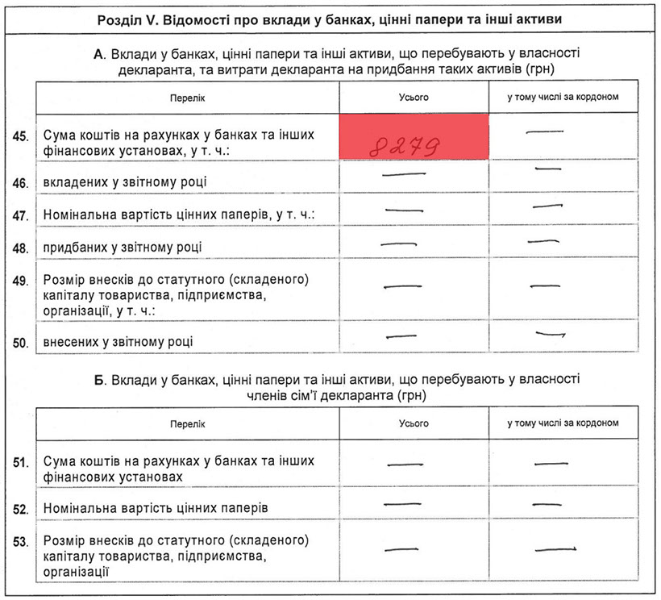
Загалом майно Сокуренка Д.М., на даний момент, можна оцінити у більш як 1,4млн.$. або майже 35млн.грн. (128 його річних заробітних плат). І це зараз, в умовах фінансової кризи в країні. Скільки ж воно коштувало до 2014р., можна лише здогадуватися.
Де ж взяти такі кошти людині, яка практично все своє життя пропрацювала суддею (з липня 1978р.) та начальником Головного управління юстиції у м.Києві (обіймав дану посаду з лютого 1989(!) по червень 2013рр., тобто майже 25 років)? Мабуть без проблем, якщо, наприклад, ухвалювати такі рішення на посаді судді "Іменем України", як зняття арешту з 13,1млн. швейцарських франків (13,5млн.$) судді Вищого господарського суду України Артура Ємельянова, які знаходилися на рахунках контрольованої його дружиною офшорної фірми "Restwood" (Панама) і були арештовані владою Ліхтенштейну 28 липня 2015р.
Частина 2. Авраменко Микола Григорович.
УТОЧНИТЬ ЕГО ФОТО

Фото - vkksu.gov.ua
Знайомтеся. На фото - суддя апеляційного суду Київської області Авраменко Микола Григорович.
Так, ви не помилилися, автор фото - vkksu.gov.ua, тобто Вища кваліфікаційна комісія суддів України (ВККС), зроблене воно 20 квітня 2016р. під час первинного кваліфікаційного оцінювання суддів апеляційного суду Київської області.
За результатами оцінювання в той день восьми суддів, колегія Комісії вирішила, що шестеро суддів здатні здійснювати правосуддя у відповідному суді, серед них і... Авраменко Микола Григорович :)
Але ми маємо величезні сумніви в тому, чи дійсно пан Авраменко здатний здійснювати правосуддя, враховуючи ту інформацію, яку отримали з його офіційної декларації.
Отже, Микола Григорович у своїй декларації за 2014р. вказав суму сукупного доходу за рік у розмірі майже 2 млн.грн.(!)

Звідки ж такі мільйонні доходи у судді? - запитаєте ви, якщо його заробітна плата за рік склала лише 254тис.грн.? Насправді все просто. Хоча це з якої сторони подивитися.
Просто суддя апеляційного суду Київської області Авраменко Микола Григорович у 2014р. отримав 1млн.711тис.грн. за рішенням Європейського суду з прав людини(!) НА ПРИДБАННЯ КВАРТИРИ (!!!) О_о

Курс гривні в 2014р. коливався від 8грн./1$ до майже 16грн./1$, тобто в доларах США сума в 1,711млн.грн. станом на 2014р. дорівнювала від 107тис.$ до 214тис.$
На жаль, дане рішення Європейського суду з прав людини (ЄСПЛ) у відкритому доступі нам знайти не вдалося, тому про чітку суму в $ США ми не можемо сказати, але вона точно не менша ніж 100тис.$
Цікаво, як часто українські громадяни отримують від держави Україна за рішенням ЄСПЛ десятки, а то і сотні тисяч доларів на придбання квартири???
Мабуть Миколі Григоровичу просто "пощастило"? Ну ок. Здається і не лише з квартирою, але про це трохи згодом.
З 2006р. пан Авраменко вже мав квартиру в Броварах (зараз ціна подібної квартири стартує від 30тис.$), точніше його дружина Авраменко Наталія Анатоліївна, яка отримує чималі доходи від провадження незалежної професійної діяльності. А в 2010р. пані Авраменко придбала ще одну квартиру більшою площею (на сьогодні її ціна складає близько 40тис.$) майже по сусідству з першою.
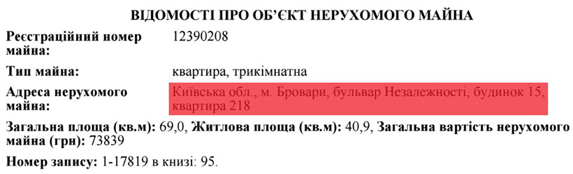
Дані квартири зазначені в декларації за 2014р..
Також у 2014р. Наталія Анатоліївна задекларувала майже 1млн.грн. доходів, у 2015р. - 1,25млн.грн.
Працює приватним нотаріусом.
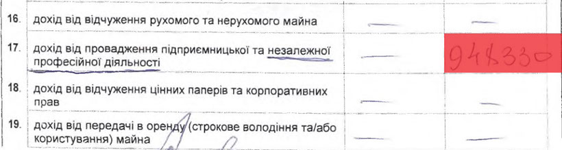
То невже родина Авраменків аж так потребувала тих 1,7млн.грн. на придбання собі чергової квартири, маючи такі доходи?
Але далі стає ще цікавіше.
Також в декларації зазначено, що дружина пана Авраменка має чи орендує три земельні ділянки, дві з яких площею по 7 соток і одна - 4 сотки.
Ми ж вирішили уточнити цей момент і ось яку інформацію отримали стосовно даних земельних ділянок.
Знаходяться вони поряд одна з одною, також у Броварах.

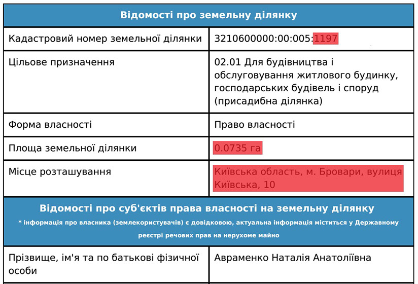

2 - 3
<
>
А ось що саме знаходиться на території цих трьох земельних ділянок :)))
Один великий житловий будинок загальною площею мінімум 450м² з підземним паркінгом та будинок поменше, квадратів на 150.


1 - 4
<
>
На подвір'ї нами також був помічений автомобіль ТOYOTA Sequoia.

Мабуть знову "випадковість"? Інакше як пояснити, що такий же автомобіль ТOYOTA Sequoia зазначений і в декларації судді Авраменка Миколи Григоровича як транспортний засіб, що перебуває у власності чи в оренді дружини? :)

Тобто виходить, що пан Авраменко не вказав у своїх деклараціях за 2014 та 2015рр. даний житловий будинок? Чергова "помилка" в декларуванні українським суддею свого майна? Чи просто ухилення від сплати податків?
Наше припущення, що даний будинок просто зазначений як "незавершене будівництво" у графі "житлові будинки" серед задекларованого майна дружини Наталії Авраменко в декларації за 2014р. та "будинок не зданий в експлуатацыю" в декларації за 2015р.

А як відомо, не введена в експлуатацію нерухомість не оподатковується :)
Але ж це очевидно, що в даному будинку вже живуть люди і не перший рік. Зі знімків Google Earth можно зрозуміти, що ще з 2002 по 2008 рр. ще велося якесь будівництво на подвір'ї, але фото зі супутника станом на 2010р. практично ідентичне знімку 2015р. Тобто будівельні роботи були завершені максимум у 2010р., а то й раніше, тобто мінімум 6 років тому.


5 - 5
<
>
Чому з того часу даний будинок все ще зазначений як "не зданий в експлуатацію"?
Здається відповідь очевидна :)
Враховуючи зазначене вище, ми, м'яко кажучи, здивовані рішенням членів Вищої кваліфікаційної комісії суддів України, що суддя апеляційного суду Київської області Авраменко Микола Григорович "здатний", на їхню думку, здійснювати правосуддя і без застережень пройшов первинне кваліфікаційне оцінювання у квітні цього року.
(И ЧТО МЫ ПО НЕМУ ДЕЛАЕМ ДАЛЬШЕ?)

Частина 3. Гарник Людмила Леонідівна.
НАЙТИ НОРМ ФОТО
Суддя Київського апеляційного господарського суду Гарник Людмила Леонідівна не підтвердила можливість здійснювати правосуддя у відповідному суді під час первинного кваліфікаційного оцінювання Вищою кваліфікаційною комісією суддів України в травні цього року.
"Комісія відсторонила її від здійснення правосуддя та направила до Національної школи суддів України для проходження перепідготовки, яка триватиме до 18 листопада 2016 року. При перепідготовці враховуватиметься спеціалізація та інстанційність суду, а також результати первинного кваліфікаційного оцінювання Людмили Гарник. Після навчання на суддю очікує повторне оцінювання".
Кар'єру судді Людмила Леонідівна розпочала в 2000р., коли стала суддею Господарського суду Одеської області.
Під час проходження первинного оцінювання, багато питань у членів Комісії виникло щодо майна судді. Ми ж розібралися в деяких з них більш детально.
Отже, суддя Київського апеляційного господарського суду Гарник Людмила Леонідівна у своїй декларації за 2013р. вказала майже 233тис.грн. доходів, з яких 220тис.грн. - її заробітна плата, 12,6тис.грн. - матеріальна допомога. Тобто, як бачимо, живе пані Гарник також практично на одну заробітну плату судді :)
ПОЧЕМУ В СУММЕ ДОХОДОВ НЕ УКАЗАНЫ 26 692,90 ДИВИДЕНТОВ И ПРОЦЕНТОВ?
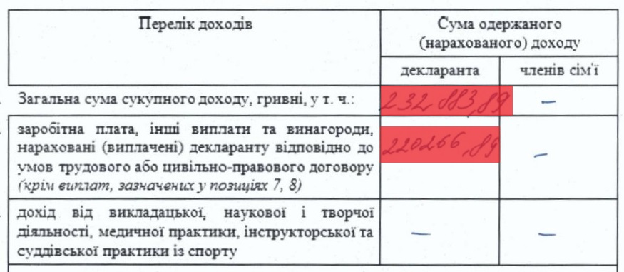
Має з 2013р. Людмила Леонідівна у власності задекларовані 2/3 київської квартири на 106,7м² у новому будинку на проспекті Лобановського (Червонозоряний), ціна на сьогодні якої складає близько 150тис.$ (3,7млн.грн.) або майже її 17 річних заробітних плат станом на 2013р.
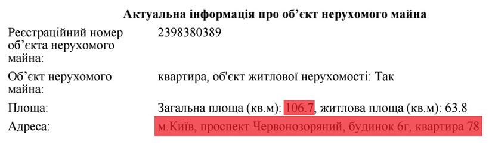
А от далі у нас постає питання: в її декларації за 2013р. вказана ще одна квартира площею 114м², але ми в реєстрі прав власності на нерухоме майно знайшли... дві квартири, які належать їй :) Обидві знаходяться в Одесі: перша - в елітному районі на Французькому бульварі (володіє з 2012р.), ще одна - на вулиці академіка Філатова (з 2009р.)
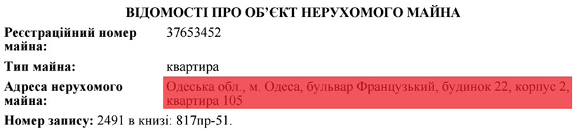
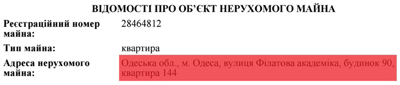
Ми перевірили будинки за цими адресами і можемо з впевненістю сказати, що квартира площею 114м² знаходиться в новому будинку на Французькому бульварі. Коштує вона недешево, з такою площею - близько 160тис.$ (майже 4млн.грн., ну або 18 річних заробітних плат пані Гарник).
Квартира ж на вул. академіка Філатова значно дешевша, до 1млн.грн. (40тис.$). Але виходить, що суддя Гарник не вказала її у своїй декларації за 2013р.? Мабуть мова йде просто про чергову "помилку"? :)
Також з 2013р. має суддя Гарник і 12 соток в елітному котеджному містечку під Одесою "Совіньйон" разом з житловим будинком на 335м² в 150м. від узбережжя Чорного моря.
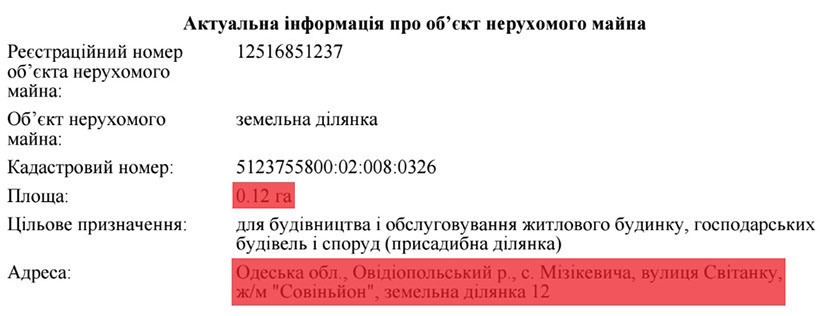
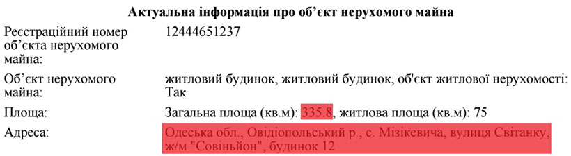
Ми знайшли даний маєток і відзняли його з повітря. Місце дійсно просто шикарне. За нашою інформацією, його актуальна ціна на сьогодні складає мінімум 500тис.$ (майже 12,5млн.грн. або 57 річних заробітних плат Гарник).
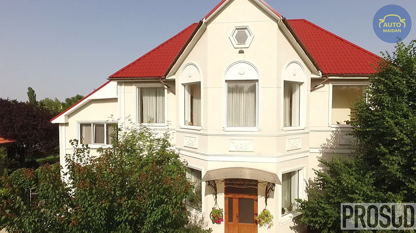
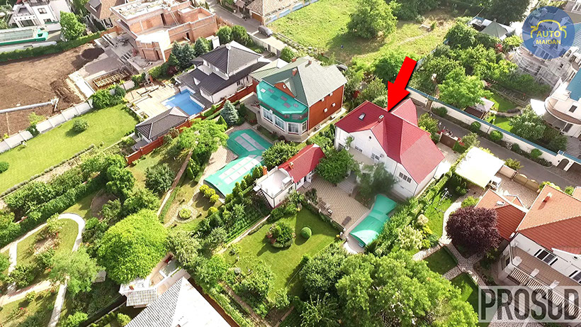
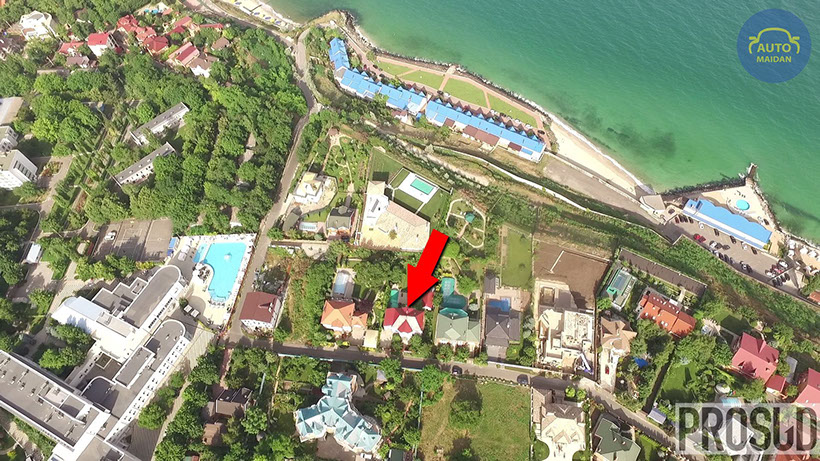
1 - 3
<
>
Має також Людмила Леонідівна і чималі суми коштів на своїх банківських рахунках. У тому ж таки 2013р. вона поклала на рахунки 4млн.562тис.грн.(!) Звідки такі кошти у судді? Пояснити Гарник так і не змогла під час проходження нею первинного кваліфікаційного оцінювання. Членам Комісії вона відповіла, що швидше за все мова йде про "помилку". Ось ця "помилка" в її декларації.
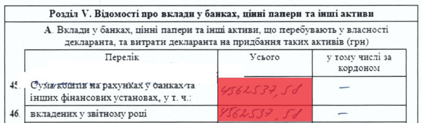
Автопарк судді Гарник складається з Mercedes-Benz S 350 2009р.
Якщо ж підсумувати вартість всього майна судді Київського апеляційного господарського суду Гарник Людмила Леонідівна та її банківські вклади станом на 2013р., то вийде достатньо кругленька сума - 24,5млн.грн. або 111 її річних заробітних плат.
Але є у Людмили Леонідівни також ще й заможний... батько - Кирплюк Леонід Болеславович (Кирплюк - її дівоче прізвище), що також має трикімнатну квартиру в центрі Одеси, в Приморському районі, прямо біля Привокзальної площі.
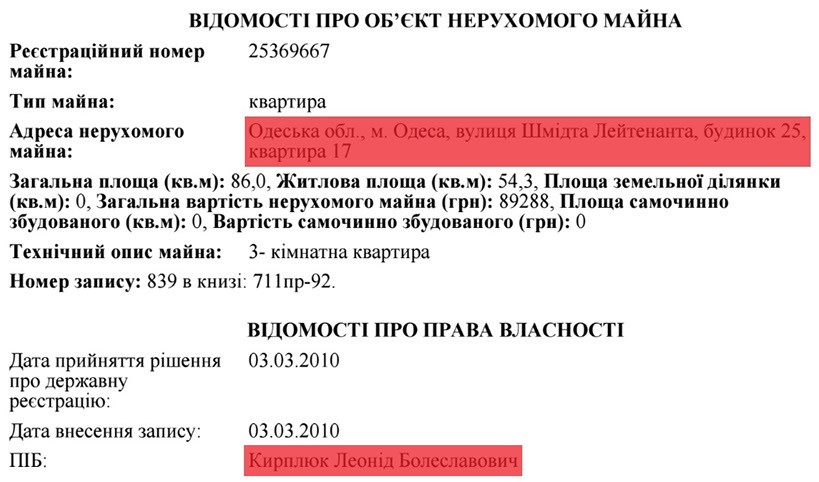
До речі, оцінили дану квартиру в 2010р. дуууже скромно, практично в 90тис.грн., насправді ж її ціна близько 80 тисяч, але доларів США, тобто майже 2млн.грн. :)
Має Леонід Болеславович також і чималу квартиру в центрі Києва площею майже в 130м²(!) на вулиці Шота Руставелі. Сьогоднішня вартість подібних квартир стартує від просто захмарних 280тис.$(!) (майже 7млн.грн.) Але він її не купував, йому цю квартиру... "подарували" у тому ж таки 2013 році :)))

Взагалі 2013р. для судді Гарник був надзвичайно вдалим.
какая стоимость домов шокун в селе?
Пробить решение суда, по которому гарник получила квартиру на филатова
Пробить ее сына ГАРНИК Кирил Юрійович, суддя Окружного адміністративного суду міста Києва
ПРО КИРИЛА ГАРНИКА МИ РОЗПОВІМО У НАШІЙ НАСТУПНІЙ СЕРІЇ. НЕ ПЕРЕМИКАЙТЕСЬ ;)
Copyright © 2016 PROSUD